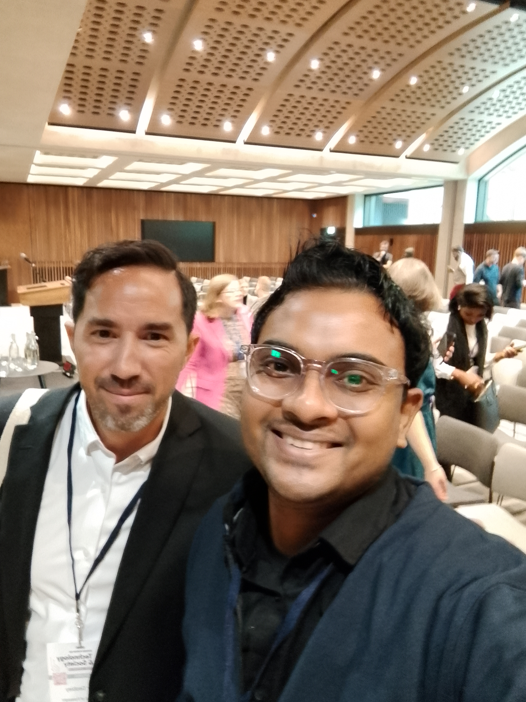
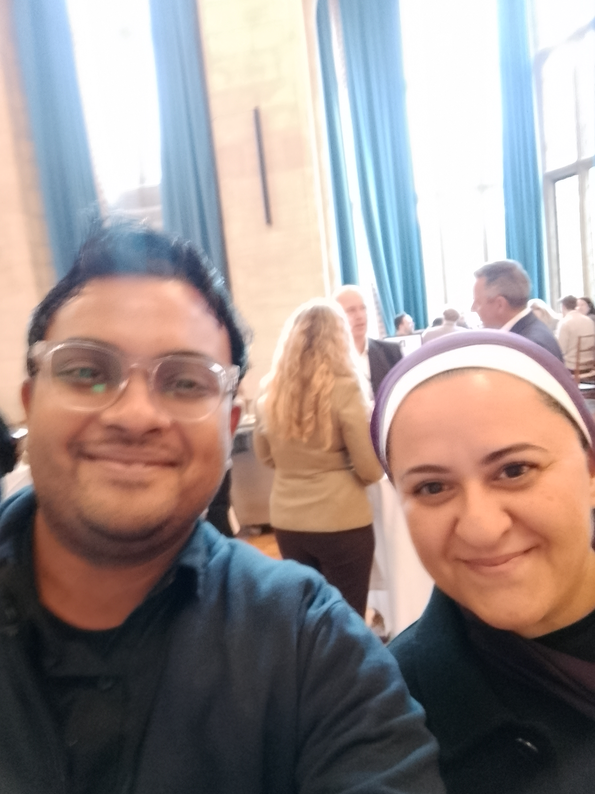

About the Oxford University Forum
I had the privilege of attending the esteemed Oxford University Forum, which brought together prominent scholars, researchers, and industry leaders from around the world. It was my second visit to the University of Oxford, and the experience was nothing short of inspiring. The event provided an excellent platform for discussing advancements in technologies and interdisciplinary research in November.
Engagement and Learnings from the Tech Lead of Dubai Future Foundation (DFF)
The forum was an incredible opportunity to engage with global experts and exchange ideas on innovative research. One of the highlights was interacting with Heba Chehade, the Foresight Lead at Dubai Future Foundation (DFF). We discussed DFF's vision for fostering innovation and technology development in the UAE. DFF is at the forefront of projects that aim to position Dubai as a global leader in future-focused strategies and cutting-edge technologies. The conversation reinforced the importance of fostering forward-thinking ecosystems that drive sustainable growth and creativity.
Insights from Global Leaders in Foresight
Another memorable interaction was with Olivier Desbiey, the Foresight Lead at AXA Insurance. We explored the latest technologies influencing the insurance and finance sectors and discussed collaborative opportunities for upcoming global sessions. It was a great learning experience that emphasized the significance of technological foresight and strategic planning in diverse industries.
Key Sessions and Learning Highlights
The forum featured a range of presentations and workshops that enriched my understanding of data science and its role in shaping the future. Some key sessions included:
- Future of Data Science: A session focused on how data science is evolving to meet the challenges of modern society. Experts discussed innovations in machine learning, data ethics, and their applications across various fields.
- Interdisciplinary Collaboration: This workshop underscored the importance of bridging different research fields to tackle complex problems, showcasing successful case studies involving mathematics, technology, and social sciences.
- Foresight in Practice: A compelling talk on the role of foresight in driving organizational and societal change, featuring real-world examples from industry leaders, including AXA and DFF.
Memorable Moments and Reflections

Interacting with experts from around the globe was an inspiring experience, allowing me to gain new perspectives and share insights on the future of data science and research.

Connecting with individuals like Heba Chehade from DFF and Olivier Desbiey from AXA provided invaluable insights into foresight and innovation-driven strategies.
.jpg)
Walking through the historic halls of the University of Oxford was a reminder of the institution's rich legacy and its ongoing role in pioneering research and thought leadership.
Takeaways and Future Directions
Attending the Oxford University Forum has deepened my commitment to interdisciplinary research and the pursuit of innovative solutions. Key takeaways include:
- Embracing Technological Foresight: Understanding how foresight can shape future strategies for organizations and communities.
- Importance of Thought Leadership: The event highlighted that continuous learning and sharing knowledge are vital for advancing global research.
Conclusion
The Oxford University Forum was a truly enriching experience that provided an opportunity to learn, engage, and reflect on the evolving landscape of research and innovation. I'm grateful for this opportunity and look forward to applying the knowledge gained to future projects.